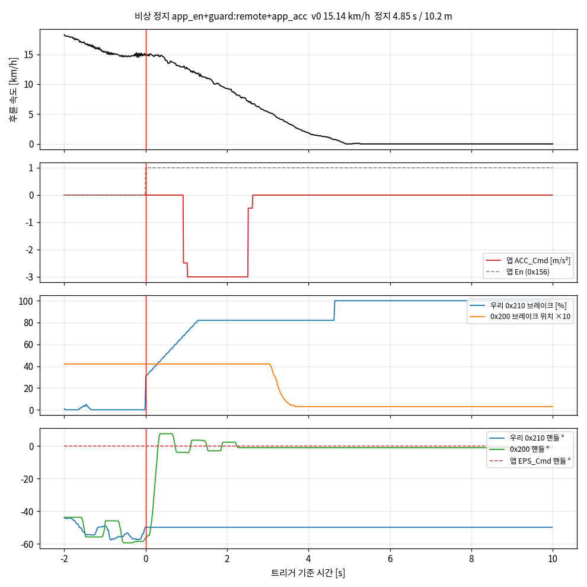
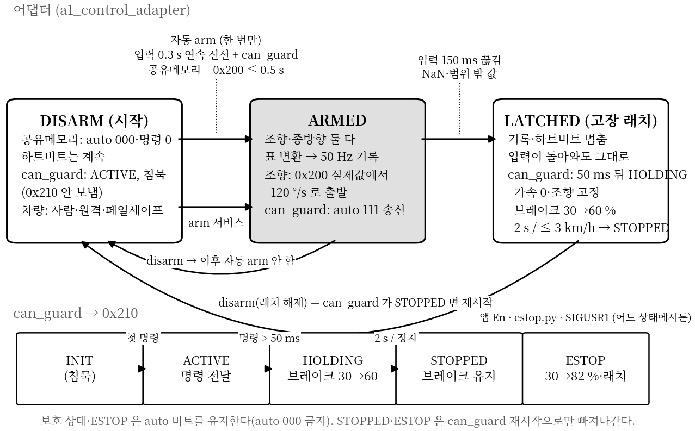
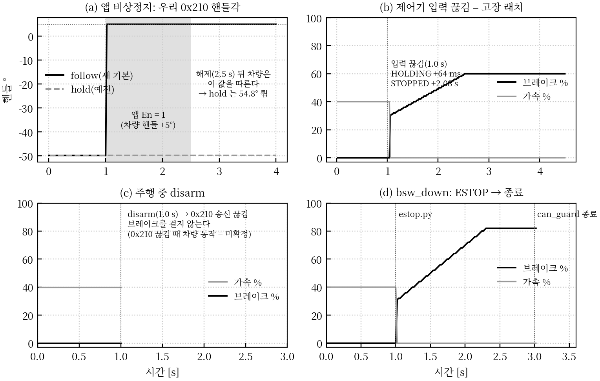
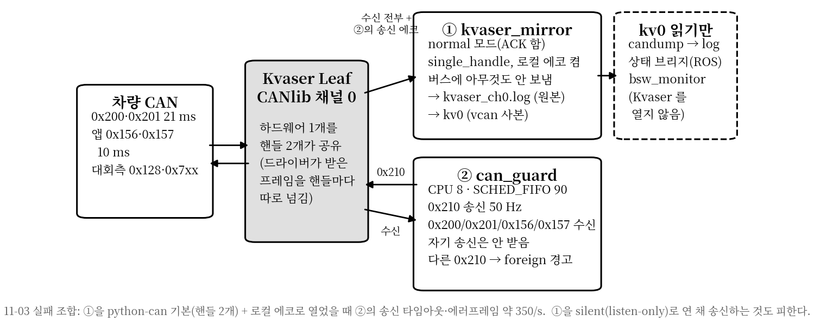
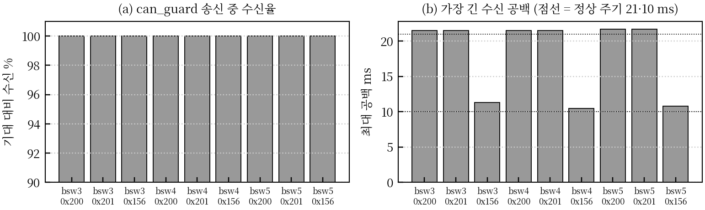

11-05 하위 제어 보고서의 후속 · 모델 팀·운용 담당을 위한 기술 보고서
요약 — 11-04 자율 주행에서 드러난 세 가지 문제를 이미 있는 자료로 다뤘다. 첫째는 앱 비상정지의 실체, 둘째는 BSW 를 하나씩 띄우면서 생긴 혼선, 셋째는 도구 결함이다. (1) 앱 "비상정지"는 별도 정지 신호가 아니다. 앱이 제어권을 가져가는 원격 인수(0x156 En = 1)다. 그동안 차량은 0x210 을 무시했고, 15 km/h 에서 4.85 s·10.2 m 만에 섰다(0.87 m/s² ★). 앱을 놓는 순간 차량은 다시 우리 0x210 을 따르는데, 이때 핸들이 −53° 튀었다. 이것은 고쳤다. (2) 주행 날 BSW 를 tools/bsw/bsw_up.sh 하나로 띄운다. 띄운 뒤에는 모델이 /control/target 을 0.3 s 넘게 내면 어댑터가 한 번만 자동 arm 되어 바로 움직인다. CAN 로그는 자동으로 녹화·압축된다. (3) 시나리오를 재현하다가 두 가지 위험을 찾아 고쳤다. 하나는 disarm 을 부르면 ESTOP·STOPPED 의 브레이크까지 사라지던 것이고, 다른 하나는 고장 래치 뒤 disarm 이 HOLDING 을 풀던 것이다. 다만 주행 중 disarm 은 여전히 정지가 아니다. (4) Kvaser 채널은 핸들 2개(미러·can_guard)가 같이 쓴다. can_guard 가 RT 로 송신하던 11-04 자율 3세션(960 s)에서 0x200·0x201·0x156 수신율은 100.0 %, 최대 공백은 21.7 ms 였다. 수신이 막히지 않았다. 11-03 의 송신 실패는 핸들 구성 문제였고 이미 고쳤다.
estop.py 나 앱으로 한다. 끝낼 때는 bsw_down.sh 를 쓴다.bsw_monitor 가 "송신자 둘"을 표시한다.| 갈래 | 11-04 (전) | 11-05 (후) | 확인 |
|---|---|---|---|
| 앱 비상정지 | "정지 버튼"으로 가정, 00 기준을 그대로 적용. 해제 순간 핸들 −53° 튐 | 원격 인수로 재정의(2장). 00 기준을 경로 A/B/C 로 나눠 적용. 앱 En 동안 조향 고정값이 실제 핸들각을 따라감 | 단위 시험, 재현(Fig. 3a) |
| BSW 띄우기 | 미러·can_guard·브리지·어댑터·arm 2회·candump 를 손으로. RT 실패 → --no-rt | bsw_up/bsw_down/bsw_status/bsw_monitor(4장). 자동 arm, CAN 로그 자동 녹화·압축 | ROS 실행(자동 arm), 가짜 세션(down). 전체는 대회 PC |
| disarm | “disarm = auto 0 송신”으로 알고 있었음(stop.sh 주석) | 실제로는 송신을 멈춤(침묵). ESTOP·STOPPED 가 disarm 에 풀리던 결함 수정(3장) | 재현 8 시나리오, ROS 실행 |
| Kvaser 수신 | “송신 채널을 열면 수신이 막힌다”는 우려 | 핸들 구성과 근거를 정리(5장). 상태판은 Kvaser 를 열지 않음 | 11-04 원본 수신율 100.0 % |
| 도구 | bringup RT 실패, SIL E2 FAIL, bag 52 s 밀림, 분석이 bag 시각 사용 | sudo 위치, 신호 대상, 브리지 필터·spin, 헤더 stamp(6장) | 부분 — 대회 PC 확인 대기 |
11-04 Kvaser 원본 16세션을 모두 다시 읽었다. 앱의 0x156 은 두 가지 값뿐이었다. AEB_En 은 한 번도 1 이 아니었다. 앱을 "누르면" EPS_En 과 ACC_En 이 함께 1 이 된다. 그 순간 0x157 은 조향 0°·가속 0.00 을 보내고 있었다.
| 프레임 (hex) | 필드 | 값 | 관측 |
|---|---|---|---|
156# 00 96 00 … cnt | EPS_En 0, EPS_Speed 0x96 = 150, ACC_En 0, AEB_En 0 | 대기 | 16세션 전부, 10 ms |
156# 01 96 01 … cnt | EPS_En 1, ACC_En 1 | 앱이 쥠 | bsw4 4,999 프레임(50.0 s), bsw5 801(8.0 s), QUICK-STEER s1·s2 |
157# 00 00 00 FF 03 … | EPS_Cmd 0.0°, ACC_Cmd raw 0x03FF → 0.00 m/s² | 중립 | En 이 켜진 순간에도 이 값 |
157# 00 00 00 D3 02 … | ACC_Cmd raw 0x02D3 → −3.00 | 최대 감속 | bsw4 에서만 1.59 s (조작자 입력) |
157# 00 00 00 C1 04 … | ACC_Cmd raw 0x04C1 → +1.94 | 가속 | bsw4 정지 뒤 앱으로 다시 주행 |
measurements/2026-11-04_drive_log/raw_can/, 분석 bsw_test/00_SAF_estop/scripts/analysis.py.
| t [s] | 앱 | can_guard (우리 0x210) | 차량 (0x200·0x201) |
|---|---|---|---|
| −0.10 | En 0 | ACTIVE, 핸들 −56.8°, 가속 82 % | 15.2 km/h, 핸들 −58.5° |
| 0.000 | En 1, ACC_Cmd 0.00, EPS_Cmd 0° | — | 15.1 km/h |
| +0.006 | 감지 5.9 ms → ESTOP, 첫 송신 브레이크 30.8 %·가속 0·auto 111, 핸들 −49.8° 고정 | ||
| +0.20 / +0.50 | 브레이크 38 → 50 % | 핸들 −35.7 → +7.6°(앱 0° 로), 브레이크 위치 4.2 그대로 | |
| +0.93 | ACC_Cmd −2.49 → −3.00(+1.03) | 브레이크 68 % | 12.9 km/h (0–0.93 s 감속 ★ 0.61 m/s²) |
| +1.3 | 브레이크 82 % 도달(40 %/s 램프 끝) | ||
| +2.52 | ACC_Cmd −0.48 → 0.00(+2.63) | 7.3 km/h (0.93–2.5 s ★ 1.0 m/s²) | |
| +4.0 | 1.8 km/h, 브레이크 위치 4.2 → 0.3 (2.5–4.0 s ★ 1.0 m/s²) | ||
| +4.85 | 브레이크 100 %(제어기 정지 명령이 바닥값) | 정지 — 10.2 m, 평균 0.87 m/s² ★, 휠락 없음 | |
| +20 / +40 | ACC_Cmd +1.86, EPS_Cmd 조작 | ESTOP 유지(브레이크 100 %) | 앱으로 다시 주행: 4.4 km/h, 핸들 148° |
| +49.99 | En 0(해제) | ESTOP 유지 | 1.5 km/h 로 움직이는 중 |
| +51.0 | 핸들 −51.1°(우리 고정값 −49.8° 로 1 s 만에 −53°), 브레이크 위치 7.6 → 정지 유지 |
bsw_test/00_SAF_estop/results/ref_20261104_app_estop/(CSV·그림), can_guard 이벤트 canguard_events.csv. 속도는 0x201 ÷ 0.958 이다.예전 ESTOP 은 진입 순간의 명령 핸들각(−49.8°)을 계속 보냈다. 그 50 s 동안 앱은 핸들을 0° 근처로 돌려 놓았다. 그래서 앱을 놓자 차량이 −49.8° 로 돌아갔다. 지금은 --estop-remote-steer follow(기본)로 바뀌었다. ESTOP 중 앱 En = 1 인 동안에는 고정값을 0x200 실제 핸들각으로 매 주기 갱신하고, En 이 꺼지면 마지막 실제값에 고정한다. Fig. 3(a)는 실제 can_guard 코드를 가상 버스로 돌린 결과다. follow 는 앱 구간과 해제 뒤에 모두 차량 값(+5°)을 유지한다. hold(예전)는 −49.8° 에 머물러 해제 순간 54.8° 튄다. 둘 다 브레이크 30 → 82 %, 가속 0, auto 111 은 같다.
17:09:58 부터 124 s 동안 0x210 이 초당 약 97 프레임이었다. 우리 50 /s 와 원격 유닛 47 /s 가 섞인 것이다. 원격 쪽은 브레이크 0·가속 최대 48 %·핸들 −150° 를 보냈고, 차는 서 있었다. can_guard 는 시작 전에만 다른 송신자를 검사해 거부한다(종료 3). 실행 중에는 stderr 경고만 남겼다. 지금은 이벤트 로그에 foreign_0x210 이 1 s 마다 남는다. bsw_monitor 와 00 analysis.py 는 "송신자 둘"을 표시한다. 동작(정지 등)은 바꾸지 않았다. 차량이 두 송신자 중 무엇을 따르는지 모르기 때문이다(업체 질문 Q5).
| 경로 | 누가 차를 세우나 | 판정 | 기록 |
|---|---|---|---|
A. 우리 정지 — estop.py·SIGUSR1·명령 끊김 | can_guard (ESTOP 30 → 82 %, 보호 30 → 60 %) | 감지 ≤ 100 ms, 제동 시작 ≤ 200 ms, 작동률 100 %, auto 000 없음 | 정지 시간·거리·휠락 |
| B. 앱 인수 — 0x156 En = 1 | 앱 조작자 + 차량 원격 모드 | can_guard 감지 ≤ 100 ms, 래치, 해제 인계, auto 000 없음 | 감속 시작(차속 −0.5 km/h), 정지 시간·거리, 해제 때 조향 변화(제안 ≤ 1 핸들 °) |
| C. 원격 유닛 0x210 | — (운용 금지) | 시작 거부, foreign_0x210 0 줄 | 있으면 그 회차 무효 |
bsw_down → bsw_up 한다(ESTOP 은 재시작으로만 풀린다).업체·대회측에 확인할 것: Q1 별도 정지 버튼(AEB_En?)이 있는가 · Q2 원격 모드에서 ACC_Cmd −3 은 몇 m/s² 이고 브레이크 액추에이터를 쓰는가(0x200 위치가 안 변함) · Q3 En = 1 동안 0x210 을 축별로 완전히 무시하는가 · Q4 En 해제 뒤 0x210 을 따르기까지의 조건·지연 · Q5 원격 유닛과 앱이 함께 켜지면 무엇을 따르는가. 자세한 내용은 bsw_test/00_SAF_estop/docs/goal.md 0절.
이 장은 모델 명령이 차를 움직이기 시작하는 조건과, 멈추거나 끊겼을 때 어떤 일이 일어나는지를 다룬다. 어댑터(a1_control_adapter)와 can_guard 두 단계를 같이 봐야 한다. Fig. 3 의 모든 값은 실제 can_guard 코드를 python-can virtual 버스로 돌려 기록했다(scenarios.py, 개발 PC, 시간 값은 참고). 어댑터 동작은 ROS2 Humble 에서 실제 노드로 확인했다.

bsw_up 은 어댑터를 auto_arm:=true 로 띄운다. 어댑터는 20 ms 마다 아래 조건을 모두 확인하고, 만족하면 조향·종방향을 같이 arm 한다.
| # | 조건 | 값 · 출처 | 안 맞으면 |
|---|---|---|---|
| 1 | 자동 arm 이 켜져 있고 아직 한 번도 쓰지 않음 | auto_arm, auto_arm_spent | arm 서비스로만 |
| 2 | 지금 arm 상태가 아님, 고장 래치·재시작 대기가 아님 | fault, wait_restart | — |
| 3 | can_guard 공유메모리가 열림 | 1 s 마다 다시 확인(재시작 시 inode 비교) | 상태에 "자동 arm 대기: can_guard 공유메모리 없음" |
| 4 | 제어기 입력이 0.3 s 동안 끊김 없이 신선 | 신선 = 마지막 유효 /control/target 이 150 ms 이내. 한 번이라도 150 ms 넘으면 0.3 s 를 다시 센다. auto_arm_fresh_s | 대기 |
| 5 | 입력이 유효 | NaN·inf 아님, |a| ≤ 15 m/s², |δ| ≤ 45° — 하나라도 어기면 마지막 값도 버림 | 거부 수 +1, 대기 |
| 6 | 0x200 조향 위치를 0.5 s 안에 받음 | 상태 브리지 /control/status/control_info | "0x200 조향 위치 없음" |
한 번만. 자동 arm 은 노드 하나당 한 번이다. 다음 중 하나가 일어나면 다시 자동으로 올라가지 않는다. ① 자동 arm 성공, ② 운영자의 disarm 이나 arm_*(false), ③ 고장 래치. 이렇게 한 이유는 "운영자가 내린 것을 모델이 다시 올리는" 일을 막기 위해서다. bsw_up 은 시작할 때 /control/target 발행자가 이미 있으면 경고하고 확인을 받는다. 뜨자마자 움직일 수 있기 때문이다.
모델 팀 약속. ① 출발 전에도, 서 있을 때도 정지 목표(예 accel_mps2 = −3)를 10–100 Hz 로 계속 낸다. 정지 목표로 arm 되면 브레이크만 걸린다. ② 150 ms 넘게 끊지 않는다. ③ 값이 범위 밖이면 그 즉시 래치된다.
arm 중에 입력이 150 ms 넘게 끊기거나 유효하지 않은 값이 오면 어댑터는 래치된다. 공유메모리 기록과 하트비트를 멈추고, 입력이 돌아와도 다시 쓰지 않는다. can_guard 는 명령 나이가 50 ms 를 넘으면 HOLDING 으로 간다(가속 즉시 0, 핸들 고정, 브레이크 30 % → 20 %/s → 60 %). HOLDING 이 2 s 지나거나 차속이 3 km/h 이하가 되면 STOPPED 로 가서 브레이크를 유지한다. STOPPED 는 can_guard 재시작으로만 빠져나간다. Fig. 3(b)에서 입력이 끊긴 뒤 HOLDING 까지 64 ms, STOPPED 까지 2.08 s 였다. 모델 출력이 끊긴 순간부터 브레이크 명령까지는 150 + 약 50–64 ms ≈ 0.2 s ★ 이고, 여기에 차량 브레이크 무반응 약 0.11 s 가 더해진다.

bsw_down: 1.0 s estop.py, 3.0 s can_guard 종료. 출처: data/scenarios.csv, data/events_*.csv.disarm 하면 어댑터가 공유메모리에 auto 000·명령 0 을 쓴다. can_guard 는 기본 --auto-off-mode silent 다. 그래서 auto 000 을 버스로 내보내지 않고 0x210 송신 자체를 멈춘다. auto 000 이 나가면 페일세이프 브레이크가 풀리기 때문이다(11-03). 따라서 disarm 은 "차를 차량 쪽에 돌려준다"는 뜻이지 정지가 아니다. 0x210 이 끊긴 뒤 차량 동작은 아직 확정되지 않았다(10-07 타임아웃 없음 vs 11-03 0.4 s 뒤 브레이크 8.2, TODO-2). stop.sh 의 예전 주석 "disarm = 차량에 auto 0" 은 틀린 설명이라 고쳤다.
| disarm 시점 | 수정 전 | 수정 후 (2026-11-05) | 운용 규칙 |
|---|---|---|---|
| 정상 주행 중 (ARMED, can_guard ACTIVE) | 1.0 s 에 0x210 송신 끊김. 브레이크 없음 (Fig. 3c) — 설계대로, 바꾸지 않음 | 주행 중 disarm 금지 → estop.py·앱 | |
| 래치 뒤, can_guard HOLDING 중 | auto 000 명령이 "명령 재개"로 보여 HOLDING → ACTIVE → 침묵(1.5 s 에 송신 끊김, 브레이크 40 % 사라짐) | 어댑터: 래치 상태에서 disarm 하면 can_guard 재시작까지 쓰지 않음(wait_restart) → HOLDING → STOPPED 유지. 그 사이 arm 요청은 거부 | 차가 선 뒤 bsw_down → bsw_up |
| STOPPED 중 | 3.5 s 에 침묵(브레이크 60 % 사라짐) | can_guard: 마지막 auto 비트·브레이크로 계속 송신(5.0 s 끝까지 60 %, auto 111) | — |
| ESTOP 중 (앱·estop.py) | 2.0 s 에 침묵(브레이크 70 % 사라짐) — ESTOP 래치가 disarm 에 풀림 | can_guard: ESTOP 유지(82 %, auto 111) | — |
scenarios.py 의 disarm·hold_disarm·stop_disarm·estop_disarm(수정 전 값은 같은 스크립트를 수정 전 코드로 돌린 결과). 수정: command_policy.command_for_state(last_auto_cmd=…) — ESTOP·STOPPED 에서 마지막 auto 명령을 쓴다. cmd_adapter.py wait_restart. 래치 → disarm → 입력 재개 상황은 ROS2 실행으로 확인했다(HOLDING → STOPPED, 재-arm 거부). can_guard 단위 시험 102 PASS. 제어 동작을 바꾼 수정이므로 대회 PC SIL·저속 실차 확인이 필요하다.| 상황 | 어댑터 | can_guard | 차량 |
|---|---|---|---|
bsw_up 직후, 모델 무발행 | DISARM(auto 000 기록) | INIT/ACTIVE, 침묵 | 사람·원격·페일세이프 |
| 모델이 정지 목표 발행 0.3 s | 자동 arm | ACTIVE, auto 111·브레이크 | 자율, 정지 유지 |
| 모델이 출발 목표 | ARMED | ACTIVE | 출발 |
| 모델 노드 죽음·150 ms 끊김·NaN | 래치 | +50 ms HOLDING → 2 s/정지 STOPPED | 가속 0·조향 고정·브레이크 30 → 60 % |
| 앱 En | (무관) | ESTOP 래치, 조향은 실제값 추종 | 앱을 따름 |
| 앱 해제(정지 뒤) | (무관) | ESTOP 유지 | can_guard 를 따름: 브레이크 유지 |
estop.py | (무관) | ESTOP 30 → 82 % | 정지 |
| 주행 중 disarm | DISARM | 침묵 | 0x210 끊김 — 미확정 |
bsw_down | (disarm 안 함) | ESTOP → 2 s → 종료 | 브레이크 82 % 뒤 0x210 끊김 — 바퀴 굄 |
"정지"에는 세 종류가 있다. ① 모델이 스스로 세우는 정상 정지, ② BSW 가 이상을 감지해 거는 보호 정지(HOLDING → STOPPED), ③ 사람이 거는 비상 정지(estop.py·앱). 아래 예시에서 시각은 사건 시점을 0 으로 잡았다. 정지 시간·거리는 실측이 아니라 11-04 감속표로 계산한 추정(★)이다. 계산 가정: 브레이크 % → 감속은 25 % 0.6, 45 % 0.87, 55 % 1.91, 100 % 3.0 m/s² 이고, 60–95 % 는 미측정이라 55–100 % 사이를 선형으로 이었다. 가속 0 일 때 타행은 0.5 m/s², 차량 브레이크 무반응은 0.11 s 로 두었다. 실제 값은 00 S1·S2(5·10 km/h)에서 잰다.
| # | 예시 상황 | 감지 · 첫 브레이크 명령 | 브레이크 | 서 있는 동안 | 다시 가려면 |
|---|---|---|---|---|---|
| ① 정상 정지 — 모델이 세운다 | |||||
| 1 | 목적지 도착: 모델이 accel −3 을 계속 냄 | 모델 명령 그대로(어댑터 → 0x210 20 ms) | 현재 표로 −3 m/s² → 90 % | ARMED·ACTIVE, 모델이 계속 정지 목표를 냄 | 모델이 출발 목표를 내면 바로 출발 |
| ② 보호 정지 — BSW 가 이상을 보고 건다 (어댑터 래치 → can_guard HOLDING → STOPPED) | |||||
| 2 | 모델 노드가 죽음·멈춤(20 km/h 주행 중) | 입력 150 ms 끊김 → 어댑터 래치 → +50–64 ms can_guard HOLDING. 끊긴 뒤 약 0.2 s | 가속 즉시 0, 핸들 고정, 30 % → 20 %/s → 60 %(1.5 s 뒤) | 차속 ≤ 3 km/h 또는 2 s 뒤 STOPPED, 60 %·auto 유지 | bsw_down → bsw_up(STOPPED 는 재시작으로만) |
| 3 | 모델이 NaN·범위 밖 값(|a| > 15, |δ| > 45°)을 냄 | 그 메시지에서 바로 래치 → +50 ms HOLDING | 2 와 같음 | 2 와 같음 | 2 와 같음 |
| 4 | localization 이 끊겨 모델이 명령을 못 냄(11-04 odom 공백 340 ms 같은 경우) | 모델 출력이 150 ms 넘게 끊기면 2 와 같음. 짧게 끊기고 돌아오면 아무 일 없음 | 2 와 같음 | 2 와 같음 | 2 와 같음 |
| 5 | 어댑터 노드가 죽음 | 공유메모리 기록·하트비트 끊김 → +50 ms HOLDING | 2 와 같음 | 2 와 같음 | 2 와 같음 |
| ③ 비상 정지 — 사람이 건다 (can_guard ESTOP, 래치) | |||||
| 6 | 사람이 위험을 보고 python3 safety/can_guard/estop.py | 다음 주기(≤ 20 ms) ESTOP | 가속 즉시 0, 핸들 고정, 30 % → 40 %/s → 82 %(1.3 s 뒤) | ESTOP 유지(차속 0 이어도). 모델·disarm 이 풀지 못함 | bsw_down → bsw_up |
| 7 | 앱 담당이 앱을 켬 | can_guard 감지 6–19 ms → ESTOP. 그러나 차량은 앱을 따른다 | 앱(원격 모드)이 정함 — 11-04 15 km/h → 4.85 s·10.2 m(실측) | 앱이 쥔 동안 앱 조작대로(가속하면 움직임). 정지 뒤 앱을 끄면 can_guard ESTOP 브레이크 | bsw_down → bsw_up |
| 8 | 물리 E-stop | 차량 자체 | 차량 자체 | — | 차량 절차 |
| 정지가 아닌 것 — 헷갈리기 쉬움 | |||||
| 9 | 운영자가 주행 중 disarm | can_guard 가 0x210 송신을 멈춤 | 우리 브레이크 없음 — 차량은 0x210 끊김 동작(미확정, TODO-2) | — | 쓰지 말 것 → 6 을 쓴다 |
| 10 | can_guard 가 죽음·PC 전원 꺼짐 | 0x210 끊김 | 차량 자체(미확정: 10-07 없음 / 11-03 0.4 s 뒤 8.2) | — | 물리 E-stop 담당이 대응 |
| 11 | 원격 유닛이 켜짐(0x210 송신자 둘) | 이벤트 foreign_0x210·상태판 경고만 | 바뀌지 않음 — 차량이 무엇을 따를지 모름 | — | 원격 유닛을 끈다. 위험하면 6 |
| 12 | bsw_up 직후 모델이 아직 안 냄 | 자동 arm 전 — can_guard 침묵 | 우리 명령 없음(차량 페일세이프·사람) | — | 모델이 0.3 s 내면 arm |
| 예시 | 10 km/h | 20 km/h | 30 km/h |
|---|---|---|---|
| 2 모델이 끊김(0.21 s 뒤 30 → 60 %) | 2.3 s · 4.3 m | 3.7 s · 12.7 m | 5.1 s · 24.8 m |
| 3 NaN(0.06 s 뒤 30 → 60 %) | 2.2 s · 3.9 m | 3.5 s · 11.8 m | 4.9 s · 23.6 m |
| 6 estop.py(0.02 s 뒤 30 → 82 %) | 1.7 s · 2.9 m | 2.7 s · 9.0 m | 3.8 s · 18.1 m |
| 7 앱 (11-04 실측 1회) | 15 km/h → 4.85 s · 10.2 m | ||
예시 2 를 시간 순으로 — 20 km/h 로 달리는데 모델 노드가 죽으면
/control/target. 어댑터는 그 값(예: 가속 80 %)을 계속 쓴다.bsw_down(ESTOP 82 % → 종료) → bsw_up. 래치 중에 disarm 해도 브레이크는 풀리지 않는다(3.3절 수정).예시 6 — 사람이 estop.py 를 누르면. 다음 can_guard 주기(≤ 20 ms)에 ESTOP 으로 간다. 가속 0, 핸들 고정, 브레이크 30 % 에서 1.3 s 동안 82 % 까지 올린다. 모델이 계속 출발 명령을 내도, 어댑터를 disarm 해도, 차가 서도 ESTOP 은 그대로다. 다시 가려면 재기동해야 한다. 앱(예시 7)과 다른 점은 이 경로에서는 can_guard 가 실제로 차를 세운다는 것이다. 그래서 00 의 경로 A 기준(감지 ≤ 100 ms, 제동 시작 ≤ 200 ms)을 적용한다.
tools/bsw/11-04 자율 주행 때는 미러·can_guard(sudo·RT)·브리지·어댑터·arm 서비스 2개·candump 를 하나씩 띄웠다. 그러다 RT 실패(--no-rt), 원격 유닛을 켠 채 시작, 녹화 누락이 생겼다. 이제 명령 넷으로 정리했다. 내부에서는 현장 시험용 bringup.sh 를 그대로 부른다. 시험과 경주가 같은 경로를 쓰게 하려는 것이다.
| 명령 | 하는 일 |
|---|---|
bsw_up.sh --name LAP1 | 사전 점검(can_guard 중복, 모델 이미 발행 중?, 원격 유닛 안내) → Kvaser 미러(원본 kvaser_ch0.log) → can_guard(CPU 8·FIFO 90, 앱 필수, 한계 150°/100 %/BSW_ACC_LIMIT 100 %) → 커널에서 RT 확인 → 브리지(0x200/0x201/0x210) + 어댑터(auto_arm:=true) → candump_kv0.log(ROS bag 없음) → SESSION.md(시각·커밋·한계) |
bsw_monitor.py | 실시간 상태판(5 Hz). 아래 4.1 |
bsw_status.sh | 한 번 점검: 프로세스·RT 정책·CPU·어댑터 arm·로그 크기 증가·이벤트 |
bsw_down.sh | 차속 > 1 km/h 면 거부 → estop.py(브레이크 30 → 82 %, auto 유지) 2 s → stop.sh --no-disarm → CAN 로그 zstd 압축·can_logs.sha256 → 00 분석 요약(비상 정지·송신자 둘) |
~/a1_race_capture/<날짜_시각>_BSW-<이름>/, 최신은 bsw_latest. 기본값 tools/bsw/bsw.env. 옵션 --sil, --manual-arm, --no-app, --no-rt. 확인: 가짜 세션으로 bsw_down(12.3 km/h 거부, 정지 시 끝까지). bsw_up 전체는 대회 PC --sil 로 먼저 확인해야 한다.bsw_monitor.py)bsw_status.sh 는 "잘 떴나"를 한 번 확인하는 점검표다. 주행 중에 계속 볼 수치를 모은 화면은 bsw_monitor.py 다. 표준 라이브러리만 쓰고, 미러가 만든 kv0 를 커널 raw 소켓으로 읽기만 한다. Kvaser 채널을 열지 않으므로 5장의 핸들 문제와 무관하다. 아래는 11-04 bsw4 원본을 --replay 로 돌린 화면이다(t ≈ +1 s, 앱이 쥔 순간).
── BSW 상태판 입력 다시 보기 kvaser_ch0.log.zst ×20 can_guard ESTOP … | ⚠️ 비상 정지 1회 — 마지막: remote remote_en detect_lag_ms=5.8 차량 속도 12.7 km/h (좌 12.4 우 11.9, ÷0.958) 차량 상태 핸들 -3.8° 브레이크 위치 4.2 auto 111 우리 0x210 핸들 -49.8° 브레이크 69 % 가속 0 % auto 111 50 Hz 앱 En 1 ⚠️ 앱이 쥠: 차량은 0x210 무시 ACC_Cmd -2.49 m/s² EPS_Cmd +0.0° 수신 0x200 48/s ✅ 0x201 48/s ✅ 0x210 50/s ✅ 0x156 100/s ✅ 0x157 100/s ✅
bsw5 를 재생하면 "우리 0x210 … 97 Hz ❌ 송신자 둘(원격 유닛?)" 이 뜬다. 우리 0x210 이 없으면 "송신 없음(INIT silent 또는 disarm — 차량은 0x210 을 못 받는 중)"이 표시된다.
결론: 지금 구성(핸들 2개)에서는 막히지 않는다. 11-04 실차 원본이 근거다. "막힌다"는 인상은 11-03 사고에서 왔다. 그때 원인은 듣는 쪽 핸들 구성이었고, 이미 고쳤다. 다만 조합을 바꾸면 다시 깨질 수 있으므로 지켜야 할 규칙이 있다.

tools/kvaser/README.md). 하드웨어 하나를 핸들 두 개가 연다. 드라이버는 받은 프레임을 핸들마다 따로 넘기고, 한 핸들이 보낸 프레임은 다른 핸들에 "로컬 에코"로 넘긴다. ROS 브리지·candump·상태판은 미러가 만든 kv0(vcan)만 읽는다.| 핸들 | 모드 | python-can 설정 | 받는 것 | 보내는 것 |
|---|---|---|---|---|
① kvaser_mirror.py | normal(ACK 함). silent 아님 | single_handle=True, receive_own_messages=True | 버스 전부 + ②의 송신(에코) → 원본 로그·kv0 | 없음 |
② can_guard | normal | python-can 기본, receive_own_messages=False, CANlib 4바이트 TXACK 패치(kvaser_compat) | 0x200·0x201·0x156·0x157(나머지는 버림), 다른 0x210 | 0x210 20 ms |
(③ lift_cmd) | normal | single_handle=True | — | 공유메모리로 명령(버스 직접 아님) |
bsw_up 은 ①②만 연다. ③은 표 측정 시험에서만 쓴다. ①②③ 세 핸들 조합은 실물로 확인하지 않았다(docs/a1_todo.md). bringup.sh 는 lift_cmd 가 떠 있으면 시작을 거부한다.can_guard 가 송신을 시작하자마자 canWriteSync 가 타임아웃 났다. 수신은 0, 에러프레임은 초당 약 350 이었고 Kvaser 단자를 바꿔도 같았다. 송신을 멈추면 즉시 정상으로 돌아왔다. 1프레임씩 분리 시험한 결과는 다음과 같다(measurements/2026-11-03_signal_audit/analysis/stage2_static.md, qa_summary.md Q5).
| 구성 | 송신 |
|---|---|
| 핸들 1개 단독 송신 | 성공 |
| 미러(python-can 기본 = 읽기·쓰기 핸들 2개 + 로컬 에코) 옆에서 송신 | 실패 |
미러·송신 모두 single_handle=True | 성공 |
| 미러 로컬 에코 끔 | 성공 |
bringup.sh 가 그렇게 한다).
tools/drive_log/kvaser_rx_check.py → data/kvaser_rx.tsv.| 세션 | 구간 [s] | 0x200 · 0x201 수신 / 최대 공백 | 0x156(앱) 수신 / 최대 공백 | 우리 0x210 (에코) |
|---|---|---|---|---|
| bsw3 (60 m·300 m 주행) | 282 | 100.0 % · 100.0 % / 21.5 ms | 100.0 % / 11.3 ms | 98.0 % — 시작 때 5.6 s 공백 1회(주행 전) |
| bsw4 (랩 1, 앱 정지) | 118 | 100.0 % · 100.0 % / 21.5 ms | 100.0 % / 10.5 ms | 100.0 % / 20.6 ms |
| bsw5 (랩 2, 2.0 km) | 560 | 100.0 % · 100.0 % / 21.7 ms | 100.0 % / 10.8 ms | 120.7 % — 원격 유닛 0x210 이 섞임(2.5절) |
tx_fail = 0(88,509 주기 ★). bsw·bsw2 는 can_guard 가 ACTIVE 였지만 어댑터가 disarm 이라 0x210 을 보내지 않아(침묵) 표에서 뺐다. 빠른 시험 ADAPTER-LON s1(비격리)도 100.0 % 였다.kv0 를 읽는다.single_handle=True, 송신이 있는 동안 normal 모드로 연다(silent 금지). bringup.sh·bsw_up 이 그렇게 연다.kvaser_compat.apply() 와 single_handle=True 를 쓰고, 실물에서 미러와 함께 송신을 확인한다.bsw_monitor 수신 줄이 모두 ✅ 인지, 미러 로그 "에러프레임 0/s", can_guard 상태 줄 "송신오류 누적 0건".| 문제 (11-04) | 원인 | 수정 | 확인 |
|---|---|---|---|
bringup --rt 에서 can_guard 안 뜸 | setsid sudo chrt …: 터미널 없는 새 세션이라 sudo 가 방금 받은 인증을 못 씀 | sudo -n setsid -f chrt -f 90 sudo -u $USER …(sudo 를 setsid 밖에서). 기동 뒤 chrt -p·taskset -cp 로 확인 | 문법 · 대회 PC 대기 |
SIL E2(SIGUSR1) --rt FAIL | 신호를 바깥 sudo 에 보냄. sudo 는 같은 프로세스 그룹에서 온 신호를 중계하지 않음 | /proc 자식 트리에서 실제 can_guard 파이썬을 찾아 보냄. E7(원격 우선 조향) 추가 | 중첩 래퍼 시험 · 대회 PC 대기 |
| bag CAN 토픽 최대 52 s 밀림 | 브리지가 프레임마다 spin_once, 모든 ID(약 580 /s)를 한 코어에서 브리지·디코더·어댑터가 처리 | spin 0.2 s 마다(30 → 1.8 µs/프레임, 개발 PC), 커널 ID 필터 기본 0x200/0x201/0x210(약 145 /s), 5 s 마다 밀림 경고 | 벤치 · 대회 PC bag < 1 s 대기 |
| 분석이 bag 시각 사용 | fit_maps.py 가 bag 기록 시각을 씀 | 헤더 stamp 기본(--time bag = 예전), extract.py 열 t/t_bag | 완료 |
| 기타 | — | can_guard --help % 오류, 실행 중 다른 0x210 이벤트, 00 analysis.py, kvaser_rx_check.py | 완료 |
| 항목 | 개발 PC | 남은 확인 (대회 PC → 실차) |
|---|---|---|
| can_guard 단위 시험 | 102 PASS | run_sil_check.sh --rt auto E1–E7 전부 PASS |
| 앱 해제 인계(follow), disarm 래치 수정 | 재현 시나리오·ROS 실행 | SIL E7 → 저속(≤ 10 km/h) 실차 00 S0–S2 |
| 자동 arm | ROS 실행: 0.30 s arm, 151 ms 래치, 재-arm 없음 | bsw_up --sil + 정지 목표 발행 → 실차 정지 상태에서 arm 확인 |
bsw_up·bsw_down·상태판 | down·monitor(재생) | bsw_up --sil 전체, 실차 띄우기·끄기 1회 |
| Kvaser 수신 | 11-04 원본 100 % | 새 코드로 실차에서 상태판 수신 줄·에러프레임 0 확인 |
| bringup RT·브리지 지연 | 문법·벤치 | RT ✅ 표시, bag 수신 − 헤더 < 1 s, A-3 재측정, 8 h soak |
| 업체 질문 Q1–Q5, TODO-2 | — | 답에 따라 경로 B 기준 확정 |
사용자 확인 필요: ① 00 기준 숫자는 그대로 두고 경로 A/B 로 나눠 적용한 것. ② 앱 해제 인계 기준 제안(조향 변화 ≤ 1 핸들 °). ③ 제어 동작을 바꾼 세 가지 수정(ESTOP 조향 follow, ESTOP·STOPPED disarm 무시, 래치 뒤 어댑터 쓰기 중단).
# 저장소 루트에서 python3 bsw_test/00_SAF_estop/scripts/analysis.py measurements/2026-11-04_drive_log/raw_can/auto_bsw4/kvaser_ch0.log.zst \ --events measurements/2026-11-04_drive_log/tables/canguard_events.csv --session bsw4 \ --out bsw_test/00_SAF_estop/results/ref_20261104_app_estop --plot --name 20261104_auto_bsw4 # 2장 표·Fig. 1 python3 tools/drive_log/kvaser_rx_check.py measurements/2026-11-04_drive_log/raw_can/auto_bsw*/kvaser_ch0.log.zst \ > reports/2026-11-05_bsw_update_report/data/kvaser_rx.tsv # 5장 cd reports/2026-11-05_bsw_update_report python3 scenarios.py ../.. . # 3장 시나리오(python-can 필요) → data/scenarios.csv python3 make_figs.py ../.. . # Fig. 1–5 google-chrome --headless --no-pdf-header-footer --print-to-pdf=report.pdf report.html python3 tools/bsw/bsw_monitor.py --replay measurements/2026-11-04_drive_log/raw_can/auto_bsw4/kvaser_ch0.log.zst # 4.1 화면